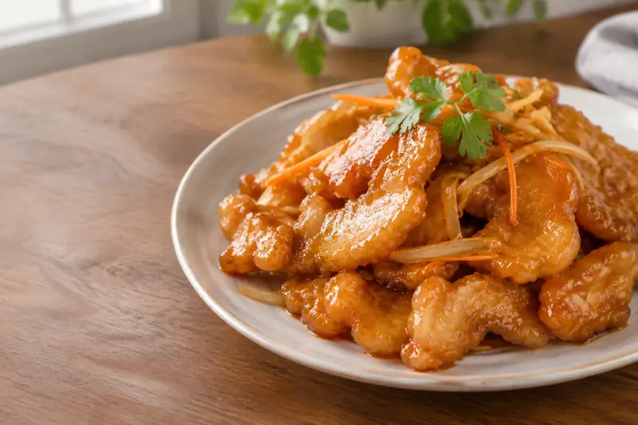

Main主菜 · Northeastern Chinese东北
Guobaorou Sweet and Sour Crispy Pork锅包肉
Classic Harbin-style guobaorou pairs a shatteringly crisp golden shell with tender pork inside and a bright, caramelised sweet-and-sour glaze that never turns chewy. Boil the vinegar-sugar sauce until it forms large bubbles and turns thin and glossy, then toss the pork in rapidly for an even, crisp coat.正宗哈尔滨老式锅包肉讲究外壳金黄酥脆、里面肉片软嫩，一口咬下酸甜带焦香，不粘牙也不回软。糖醋汁烧至冒大泡、边缘微稠发亮后迅速下肉片翻匀，才能挂上一层薄亮脆衣。

Ingredients食材
- Pork loin猪里脊 450 g · 450 g pork loin, sliced 3 mm thick猪里脊肉 450 克，切约 3 毫米大片
- Cornstarch玉米淀粉 180 g · about 180 g (1.5 cups), soaked in water for wet starch batter约 180 克（1.5 杯），加水泡透取沉淀湿淀粉挂糊 if you can find potato starch, traditionally 180-200 g potato starch gives the crispiest shell如果买得到土豆淀粉，传统做法用 180–200 克土豆淀粉外壳最酥脆
- Rice vinegar米醋 45 g · 3 tbsp rice vinegar (or white vinegar), about 45 g米醋 3 汤匙（或白醋，约 45 克） use clear rice vinegar or white vinegar rather than dark vinegar用清亮米醋或白醋，不用黑醋或陈醋
- Sugar白糖 48 g · 4 tbsp (48 g)4 汤匙（48 克）
- Shaoxing wine料酒(绍兴) 15 g · 1 tbsp (15 mL), for brief seasoning1 汤匙（15 mL），抓匀肉片用
- Salt盐 5 g · about 5 g, split between pork and sauce约 5 克（肉片和调汁分用）
- Ginger姜 15 g · about 4 slices, finely julienned约 4 片，切细丝
- Garlic大蒜 8 g · 2 cloves, thinly sliced2 瓣，切薄片
- Green onions大葱/小葱 25 g · 2 stalks white parts only, finely julienned2 根葱白，切细丝
- Carrots胡萝卜 30 g · 1 small piece, finely julienned小半根，切细丝
- Canola oil菜籽油 60 g · about 500 mL for frying (about 60 g absorbed)炸油约 500 毫升（实耗约 60 克）
Weights are as bought, before trimming or peeling. Costco pack sizes and availability vary; see each ingredient page.重量为买回来的原重（去皮去骨之前）。Costco 规格与有无随时变化，点食材名看详情。
Method做法
- Soak the potato starch (or cornstarch) in cold water for at least 30 minutes until the starch settles completely.淀粉（如果买得到土豆淀粉最好）加足量冷水搅匀，浸泡至少 30 分钟，待淀粉完全沉底。
- Finely julienne the ginger, green onion whites and carrot, and thinly slice the garlic (add a few short sprigs of cilantro if you have it and like it).姜、葱白和胡萝卜切细丝，蒜切薄片备用（如买得到香菜且喜欢，也可切少许香菜短段）。
- Whisk the rice vinegar (or white vinegar), sugar, 2 g salt and 1 tbsp water in a small bowl until the sugar mostly dissolves, with no soy sauce or starch.小碗中调匀米醋（或白醋）、糖、2 克盐和 1 汤匙清水，搅至糖基本融化（不加生抽和淀粉）。
- Slice the pork about 3 mm thick and toss with 1 tbsp cooking wine and 3 g salt right before coating, with no long marinating needed.猪里脊切约 3 毫米薄片，加 1 汤匙料酒和 3 克盐抓匀即可，无需久腌。
- Pour off the clear water on top, stir 1 tbsp oil into the settled wet starch, and use the wet starch to coat the pork slices evenly.倒掉淀粉碗上层的清水，留底部沉淀湿淀粉，加 1 汤匙油拌匀，用来将肉片均匀裹上湿淀粉糊。
- Heat the oil to 175-185°C, slip the pork slices in one by one, and fry for 1.5-2 minutes until set, pale golden and floating, then remove and drain.油锅烧至 175–185°C，将肉片逐片下锅，炸约 1.5–2 分钟至定型、浅黄、浮起后捞出。
- Raise the oil to 190-200°C and refry the pork for 15-30 seconds until golden, rigid and hollow-sounding when tapped, then drain on a wire rack (at this temperature, 3 mm slices cook completely white inside and reach a safe 71°C without needing to pierce the crust).油锅升至 190–200°C，倒回肉片复炸约 15–30 秒，至金黄、硬挺、敲击有清脆声后立即捞出控油（3 毫米薄片在此油温下炸透呈全白无粉红，内部即可达到猪肉安全温度 71°C）。
- Pour out the frying oil leaving a thin film, pour in the vinegar-sugar sauce over high heat, and boil for 10-20 seconds until large bubbles form and the edges turn thin and glossy; immediately add the julienned aromatics (plus optional cilantro) and the pork, toss rapidly to coat, and plate at once.倒出炸油，锅留少许底油，大火倒入糖醋汁烧约 10–20 秒至冒大泡、边缘微稠发亮，立刻下配菜丝（及可选香菜）和肉片快速翻匀后立即出锅装盘。
Keys to success成功要点
- Wet starch soaked for at least 30 minutes and mixed with a spoonful of oil puffs into an airy, brittle crust; if you can find potato starch, 180-200 g gives the longest-lasting crunch.浸泡至少 30 分钟的湿淀粉加一勺油能形成蓬松脆壳：如果买得到土豆淀粉，用 180–200 克土豆淀粉外壳更酥脆持久。
- Two frying temperatures do different jobs: 175-185°C cooks the 3 mm slices through and sets the shell, while 190-200°C for 15-30 seconds drives off surface oil and crisps the crust.两遍炸油温分工明确：第一遍 175–185°C 让 3 毫米薄肉片炸透定型，第二遍升至 190–200°C 复炸 15–30 秒，瞬间逼油催脆。
- Keep the sweet-and-sour sauce thin and glossy without soy sauce or a starch slurry: boil over high heat just until large bubbles form at the edges, then toss immediately so the crust stays crisp.糖醋汁不加生抽也不勾芡：大火烧至冒大泡、边缘微稠发亮即可下肉快翻，形成薄亮糖衣而不会焖软外壳。
Common problems常见失败与补救
- The crust is rock-hard or slips off in the oil外壳太硬咬不动，或者下锅炸脱浆
Soak the starch for at least 30 minutes and pour off all clear water on top before mixing in oil; avoid long marinating so the pork stays dry, and wait until the oil reaches 175-185°C before frying.淀粉浸泡至少 30 分钟后务必倒净上层清水再加油拌匀；肉片不久腌以免出水，油温达 175–185°C 再逐片下锅。 - The pork turns soggy within minutes of plating一出锅几分钟就回软不脆
Do not thicken the sauce with starch—boil 10-20 seconds until bubbly and glossy, then toss quickly; refry at 190-200°C for 15-30 seconds until crisp when tapped and drain on a wire rack.糖醋汁不勾芡，大火烧 10–20 秒至冒大泡发亮即下肉快翻出锅；复炸用 190–200°C 炸 15–30 秒至敲击有声，并放网架沥油。 - The vinegar tastes harsh or the glaze looks dark醋味呛鼻或色泽发暗
Use clear rice vinegar or white vinegar without soy sauce, and boil briskly for 10-20 seconds before tossing so harsh vinegar vapours cook off and the glaze stays bright.选用清亮的米醋或白醋且不加生抽，入锅大火滚煮 10–20 秒挥发生醋冲气即可，色泽才明亮透红。
Watch it done视频参考
Title names guo bao rou and promises two batter types and two sweet-and-sour sauces; about 5 minutes.标题写明「锅包肉配方大公开」，并列出两种面糊、两种酸甜汁，约 5 分钟（无观看数据）。
Title is "The Best Chinese Sweet and Sour Pork Recipe (Guo Bao Rou)", clearly this dish; about 5 minutes; about 115,000 views.标题为「The Best Chinese Sweet and Sour Pork Recipe (Guo Bao Rou)」，明确是锅包肉，约 5 分钟，约 11.5 万次观看。
Videos load only when you tap them (youtube-nocookie). Creators are credited; we do not host their videos.点了才加载视频（youtube-nocookie）。署名原作者，本站不托管视频。
Nutrition营养
| Energy热量 | 783 kcal |
| Protein蛋白质 | 30.3 g |
| Fat脂肪 | 39 g |
| of which saturated其中饱和脂肪 | 8 g |
| Carbohydrate碳水化合物 | 74.1 g |
| Fibre膳食纤维 | 1.1 g |
| Sodium钠 | 767 mg |
High sodium钠偏高 Sodium tiers: under 345 mg lower, 345-689 mg moderate, 690 mg and above high (this site's tiers; 15% of the 2,300 mg daily reference = 345 mg).钠分档：低于 345 mg 较低，345–689 mg 中等，690 mg 及以上偏高（本站分档；345 mg ＝ 每日参考 2300 mg 的 15%）。
Computed from the Canadian Nutrient File (Health Canada) with the weights above; oil and sauces are counted in full. Real dishes differ.按加拿大营养素数据库和上面的重量计算；油和酱汁按全量计入，实际会略低。
Good to know适合 / 需注意
- About 30.3 g protein per serving, a protein-rich meal (adult reference intake roughly 50-60 g/day; needs vary).每份蛋白质约 30.3 g，属于蛋白质较高的一餐（成人每日参考量约 50–60 g，个体差异大）。
- About 767 mg sodium per serving (about 33% of the 2,300 mg daily reference), on the high side; use less soy sauce or salt, and pair with unsalted sides.每份钠约 767 mg（约占每日参考 2300 mg 的 33%），偏高；少放酱油或盐，或搭配无盐主食与蔬菜。
- About 8 g saturated fat per serving (daily reference about 20 g), on the high side; use a leaner cut or remove skin.每份饱和脂肪约 8 g（每日参考约 20 g），偏高；可换瘦肉部位或去皮。
- About 74.1 g carbohydrate per serving, plenty; adjust the staple portion to your activity.每份碳水化合物约 74.1 g，较多；按活动量调整主食份量。
- Contains allergens: Wheat / gluten.含过敏原：小麦/麸质。
Pork loin is naturally lean and high in protein, but battering, deep-frying and glazing with sugar raise the calories, carbohydrates and sugars substantially. Balance the meal with plain green vegetables and moderate portions.猪里脊本身脂肪偏低、蛋白质较足，但裹粉油炸并裹糖醋汁后总热量、碳水和糖分都会明显升高，建议搭配清炒或白灼绿叶菜分食。